Co-op Commander Guide: Zagara
Swarm Broodmother
Sections on this Page
Commander Summary
Zagara overwhelms her enemies with cheap and swarmy units that she throws relentlessly at them.

Level Unlocks
| Level/Icon | Name | Description |
|---|---|---|
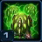 |
Relentless Swarmer | Zagara has a 100 supply maximum, but her combat units cost less and morph faster. Drones morph in pairs. Queens cost 1 supply. Larvae spawn at an increased rate. |
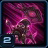 |
Infested Drop | Zagara can call down Roaches with timed life to any location on the map. Drop-pods deal damage on impact. |
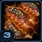 |
Inject Larvae | Increases the number of Larvae produced by the Queen’s Spawn Larvae ability from 4 to 8. |
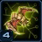 |
Scourge Upgrade Cache |
New research available on the Scourge Nest:
|
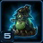 |
New Unit: Bile Launcher | Unlocks the ability to morph drones into Bile Launchers, defensive structures that deal area damage to ground and air targets. |
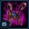 |
Zergling Upgrade Cache |
New research available on the Spawning Pool:
|
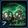 |
Baneling Nest: Birthing Chamber | The Baneling Nest will periodically spawn free Banelings. |
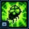 |
Incubate Banelings and Scourge | Aberrations spawn 2 Banelings from their corpses when killed. Corruptors spawn 2 Scourge when killed. |
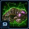 |
Evolution Chamber Upgrade Cache |
New research available on the Evolution Chamber:
|
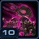 |
Darken the Skies | Increases the number of Roaches spawned by Zagara's Infested Drop ability from 10 to 20. |
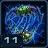 |
Baneling Nest Upgrade Cache |
New research available on the Baneling Nest:
|
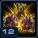 |
Zergling Evolution: Swarmling |
Upgrades Zerglings into the Swarmling strain. Fast melee unit. Spawns in groups of three. Morphs almost instantly. Can morph into a Baneling. Can attack ground units. |
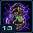 |
Bile Launcher Upgrade Cache |
New research available on the Spawning Pool:
|
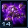 |
Baneling Evolution: Splitter |
Evolves Zagara's Banelings into the Splitter strain. Suicide unit. Deals damage over a small area upon death. Splits into smaller units as it dies. Can attack ground units. |
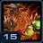 |
Broodmother |
Reduces the energy cost of Zagara's Baneling Barrage and Spawn Hunter-Killers abilities by 50%. Increases the number of units spawned by Baneling Barrage and Spawn Hunter-Killers by 50%. |
Highlighted rows denote large power spikes for the commander.
Achievements
The commander-specific achievements for Zagara are:
| Achievement | Name | Description |
|---|---|---|
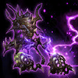 |
Big Bangs | Destroy 5,000 enemy units with Zagara's Banelings in Co-op Missions. |
| Mass Frenzy | Your ally deals 10,000 damage while Zagara's Mass Frenzy is activated in Co-op Missions. | |
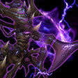 |
Queen of Destruction | Kill 500 enemy units in a single mission when playing as Zagara on Hard difficulty. |
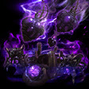 |
Roach Rampage | Kill 100 enemy units using Zagara's Infested Drop in a single mission on Hard difficulty. |
Sub-Ascension Leveling
Difficulty: Very Hard
Due the the lack of free Banelings and Swarmlings, Zagara is one of the most difficult commanders to level at lower levels. Take the game extremely slowly to prevent unit loses, morphing Banelings whenever you have resources to spare. Add some Aberrations to your army to provide you with sustained damage.
Masteries
Below are the three Power Sets for Zagara with the recommended point allocations for each. Note that these are meant to serve a general, all-purpose build that is effective across all maps with no Prestiges selected. You are highly encourged to change these masteries to suit your playstyle and particular challenges you face (e.g. Weekly Mutations).
Power Set 1:
| Power | Value | Recommended Points to Add | Further Considerations |
|---|---|---|---|
| Zagara and Queen Regen | 1% per point 30% maximum |
30 | Players that actively micro Zagara may be able to trim some points off the Life and Energy mastery to put into Zagara's attack damage to increase her damage output. However, this makes her more fragile, and may prevent her from spamming abilities as often as she can. |
| Zagara Attack Damage | 1 per point 30 maximum |
0 |
Zagara has a very low attack speed and low HP to start, making her extremely vulnerable. By putting all the points into Zagara's Life and Energy Regeneration, you can not only increase her survivability but also allow her to spam her abilities, which are the main source of her damage output.
Power Set 2:
| Power | Value | Recommended Points to Add | Further Considerations |
|---|---|---|---|
| Intensified Frenzy | 1.5% per point 45% maximum |
30 | Intensified Frenzy is an extremely powerful buff and generally, it is not viable to pick the other mastery. Players that prefer to use Zerglings instead of Banelings can use the Zergling Evasion can significantly increase the effectiveness of their zerglings. |
| Zergling Evasion | 1.5% per point 45% maximum |
0 |
Intensified Frenzy is an extremely powerful ability that affects all friendly units, including your ally's. Improving it will improve both you and your ally's effectiveness in the game. Evasion only allows Zerglings to prevent damage, without helping your army kill enemy units.
Power Set 3:
| Power | Value | Recommended Points to Add | Further Considerations |
|---|---|---|---|
| Roach Damage and Life | 2% per point 60% maximum |
0 | Zagara's Baneling Barrage is affected by the Baneling damage mastery, which is generally recommended. However, if players find that they are dependent on the Roach Drops to effectively push, they may add a few points in to that mastery to help them. |
| Baneling Attack Damage | 1 per point 30 maximum |
30 |
Baneling Attack Damage is the better option here, especially if you use Banelings combined with Frenzy to push into enemy bases.
Prestiges
Below are the prestiges for Zagara. Note that "Effective Level" is the level at which the prestige achieves it full effect.
| Level | Name | Description | Effective Level | Notes |
|---|---|---|---|---|
| 1 | Scourge Queen |
|
7 |
|
| This prestige sacrifices the hero unit for a higher supply cap as well as the ability to spawn large numbers of units. The loss of Frenzy, which is often used to help her units contact enemy forces through spells does negatively impact this prestige. However, this prestige is able to overcome that by overwhelming enemy forces with units. The costs of this are mitigated by the large number of free units that are spawned throughout the course of the game. If using this Prestige, make sure to adjust your Mastery selections so they are not invested in Zagara or her abilities. | ||||
| Level | Name | Description | Effective Level | Notes |
|---|---|---|---|---|
| 2 | Mother of Constructs |
|
1 |
|
| This prestige is a solid prestige that is particularly useful during sub-mastery leveling, as it partially solves the lack of resilience of Zagara's army. The lack of free Banelings means the player will have to think a bit more carefully about how they take engagements and how to most efficiently utilize their Banelings to achieve maximum damage. Note that this does not mean that you should not be investing in some of the smaller units or their upgrades. Banelings, Zerglings and Scourge should be made in tiny quantities, and their important upgrades (e.g. Corrosive Acid, Virulent Spores) should still be obtained, as Aberrations and Corruptors spawn Banelings and Scourge respectively when they die. Remember to adapt your build order such that you're not building a Baneling Nest too early. | ||||
| Level | Name | Description | Effective Level | Notes |
|---|---|---|---|---|
| 3 | Apex Predator |
|
1 |
|
| This prestige vastly improves the hero unit's power level such that she can solo some enemy bases without the help of her army. The Deep Tunnel ability provides Zagara with extreme mobility that is particular useful when trying to deal with mutators such as Void Rifts. However, the downside is fairly impactful. Players that take a lot of inefficient trades may find themselves starved of resources. As such, they'll need to be more careful with how they choose to engage attack waves and push into enemy bases. Avoid using this prestige on sub-mastery Zagara, as the increase in the Energy Regeneration is still not enough to allow Zagara to remain in sustained combat. | ||||
While leveling Zagara sub-mastery, the Mother of Constructs prestige should be used, due to the weakness of the hero unit because of the lack of the level 15 Level Unlock. For players that prefer the F2 a-move style of play, playing without a Prestige Talent selected will provide them with all the tools they need to be able to handle any scenario thrown at them. However, players that are a little more proactive and aggressive with their hero units will probably be able to get a lot of value from the Apex Predator prestige.
Hero Unit
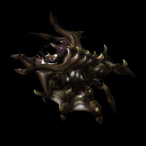
Spawn time: 4:00
Respawn time: 1:00
The abilities for Zagara are:
| Ability | Name | Description | Cooldown | Energy Cost |
|---|---|---|---|---|
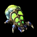 |
Baneling Barrage | Launches 6 Banelings towards the target point. Each Baneling explodes for 40 damage (80 vs structures). | 10 seconds | 25 |
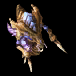 |
Spawn Hunter Killers | Spawns 6 Hunter Killers at the target point that last 20 seconds. | 30 seconds | 30 |
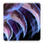 |
Mass Frenzy | Grants all friendly units on the map 25% attack speed and 25% movement speed for 15 seconds. | 90 seconds | 25 |
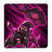 |
Infested Drop | Calls down 10 drop-pods onto the target area, dealing 50 damage with each drop-pod and spawning a total of 20 Roaches that last 30 seconds. | Coolup: 600 seconds Cooldown: 180 seconds |
0 |
The upgrades for Zagara are:
| Upgrade | Name | Effect |  / / |
Research Time |
|---|---|---|---|---|
| Heroic Fortitude | Zagara gains +200 maximum life. Life-regeneration rate increased by 100%. |
100/100 | 60 seconds | |
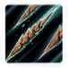 |
Medusa Blades | Zagara's attacks deal area damage, splashing to enemy units near her primary target. | 150/150 | 90 seconds |
Recommended Army Composition
The recommended army composition for Zagara is below. Note that this assumes no Prestige talent selected and recommended Mastery Allocations. This is a basic recommendation for your army framework. It is recommended to gain an understanding for each of the units in the Units section and further add tech units so that you are able to better handle the situations you face.
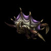
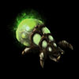
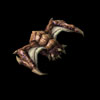
Zagara should be relying on her cheapest units to push into enemy bases and killing off attack waves. Attack Waves and base pushes should always be done while under the Frenzy from Zagara to prevent excessive losses.
Combat Units
For more information on Zagara's unit stats, comparison between units and upgrade calculations, visit the Data Tables page.
Zagara's combat units are listed below:
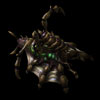
Queen
- Can be used to spread creep and inject larva.
- Not worth making for larva injects, due to it taking up supply.
Skills:
| Skill | Name | Description | Cooldown | Energy Cost |
|---|---|---|---|---|
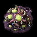 |
Spawn Creep Tumor | A burrowed creep generator. Creep feeds nearby Zerg structures. A Creep Tumor can spawn additional Creep Tumors. Bonus: Zerg move faster on creep. |
15 seconds | 25 |
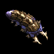 |
Spawn Larva | Target Hatchery, Lair, or Hive spawns 8 Larvae in 40 seconds. | 25 seconds | 0 |
| Transfusion | Instantly restores 125 life to target biological unit or structure. | 0 seconds | 50 |
Upgrades: None
Zergling
- Should be the core unit of Zagara's army.
- Fragile, but expendable.
- Very susceptible to splash damage.
Skills: None
Upgrades:
| Upgrade | Name | Effect | / |
Research Time |
|---|---|---|---|---|
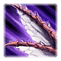 |
Metabolic Boost | Increases the movement speed of Zerglings by 60%. | 100/100 | 60 seconds |
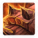 |
Hardened Carapace | Zerglings gain +10 maximum life. | 150/150 | 60 seconds |
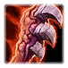 |
Adrenal Overload | Increases the attack speed of Zerglings by 40%. | 150/150 | 60 seconds |
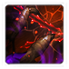 |
Shredding Claws | Zergling attacks reduce their target's armor to 0 for 10 seconds. | 150/150 | 90 seconds |
Baneling
- Should have sufficient numbers in your army.
- Does great amounts of splash damage.
- Very susceptible to splash damage.
Skills: None
Upgrades:
| Upgrade | Name | Effect | / |
Research Time |
|---|---|---|---|---|
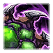 |
Centrifugal Hooks | Increases the movement speed of Banelings by 15%. | 100/100 | 60 seconds |
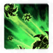 |
Corrosive Acid | Increases the Baneling's base attack damage against primary target by 100%. Splash damage remains the same. | 150/150 | 90 seconds |
| Rupture | Baneling blast radius increased by 50%. | 150/150 | 90 seconds |
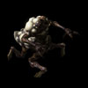
Aberration
- Useful for lengthy combat situations, like on Miner Evacuation.
- Given adequate micro "Protective Cover" Upgrade can be used to increase survivability of Zerglings.
- Spawns Banelings upon death.
Skills: None
Upgrades:
| Upgrade | Name | Effect | / |
Research Time |
|---|---|---|---|---|
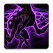 |
Protective Cover | Aberrations grant 50% damage reduction to units positioned beneath them. | 150/150 | 90 seconds |
Scourge
- Powerful anti-air unit.
- "Simplified Genome" upgrade is a must-get.
- Very susceptible to splash damage.
Skills: None
Upgrades:
| Upgrade | Name | Effect | / |
Research Time |
|---|---|---|---|---|
| Virulent Spores | Scourge deal 50% of their attack damage in a small area upon death. | 100/100 | 60 seconds | |
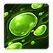 |
Simplified Genome | Reduces the amount of vespene gas required to morph Scourge by 50. | 150/150 | 60 seconds |
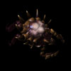
Corruptor
- Useful for its "Corruption" ability which can increase damage taken by enemies by 35%.
- Spawns Scourge upon death.
Skills:
| Skill | Name | Description | Cooldown | Energy Cost |
|---|---|---|---|---|
| Corruption | Covers the target enemy unit in Zerg slime, increasing the damage taken by 35% for 30 seconds. | 15 seconds | 0 |
Upgrades: None
Build Order
Below is the standard economic build order for Zagara. For more information on how to read and construct your own build orders, please check the Build Order Theory page.
9 Extractor
11 Spawning Pool
11 Extractor
11 Overlord
11 Baneling Nest
10 Zergling -> Rocks
12 Zergling -> Rocks
19 Hatchery
Note: Zagara's drones cost 0.5 supply, but to prevent confusion, supplies in the build order above are shown as the supply you will see in-game.
Gameplay Guide
Playstyle Traps
None
Bile Launchers
Zagara's Bile Launchers are decent static defenses when playing on Dead of Night, due to their splash damage. These Bile Launchers have stats and upgrades, shown below:
| Building | Name | Stats |
|---|---|---|
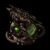 |
Bile Launcher | HP: 400 Damage: 75 Range: 15 Speed: 7 Targets: Air and Ground |
| Skill | Name | Description | Cooldown | Energy Cost |
|---|---|---|---|---|
| Bombardment | Constantly blasts a target area, repeatedly dealing 75 damage to enemy ground and air units. | 0 seconds | 0 |
| Upgrade | Name | Effect | / |
Research Time |
|---|---|---|---|---|
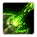 |
Artillery Ducts | Increases the range of the Bile Launcher's Bombardment by 10. | 100/100 | 60 seconds |
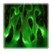 |
Rapid Bombardment | Reduces the cooldown of the Bile Launcher's Bombardment. | 150/150 | 90 seconds |
Playstyle Tips
- Build at least 4 Hatcheries to provide you with the larva you need to keep you supply-capped. If you find you're floating minerals, build up to two more to allow you to quickly refill your army.
- Build a single Corruptor and cast Corruption on bonus objective units before running your banelings/scourge into them to maximize damage efficiency.
- Use Mass Frenzy as much as possible. With a 90 second cooldown, it can be used in most engagements and increase the effectiveness of your army.
- Cast Infested Drop and Spawn Hunter Killers before you cast Mass Frenzy so the newly-spawned units also get the buff.